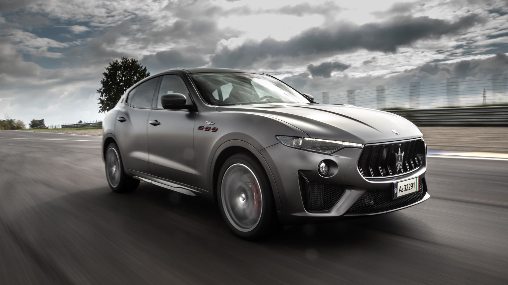
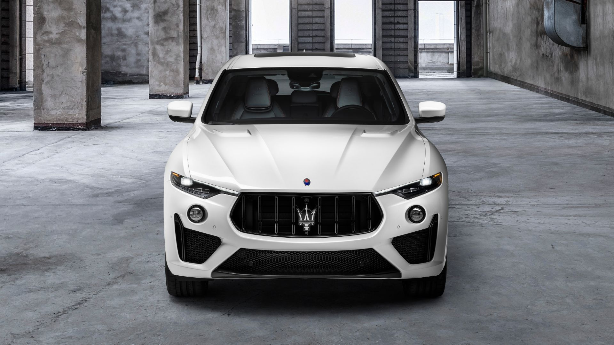
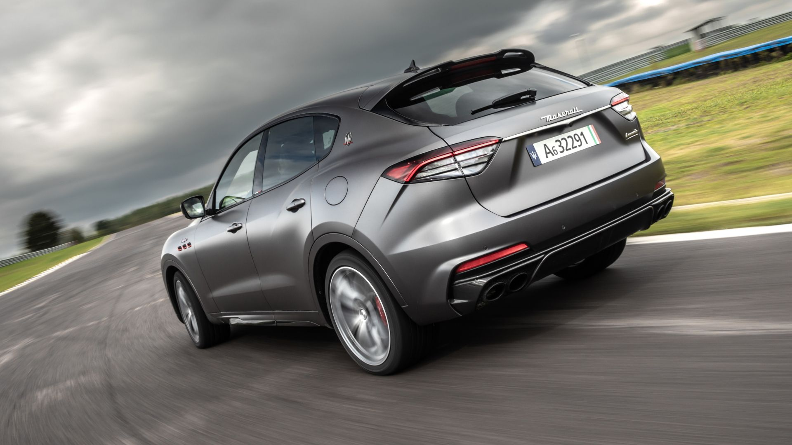
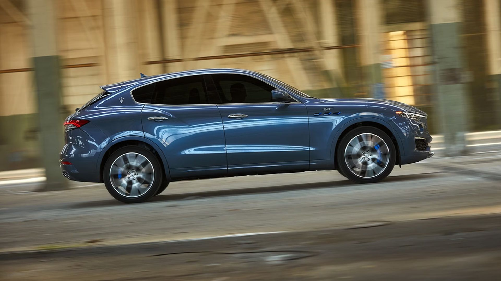

Тачки и Точка
@tachki
Тачки и Точка
@tachki
Maserati Levante ОБЕСЦЕНИЛСЯ в ПЯТЬ раз за 5 лет флагманский кроссовер который стоил около 150 тысяч 125 миллиона теперь продают по цене нового Prius.




Maserati Levante ОБЕСЦЕНИЛСЯ в ПЯТЬ раз за 5 лет — флагманский кроссовер, который стоил около $150 тысяч (₽12,5 миллиона), теперь продают по цене нового Prius.
Потеря составила $118 тысяч (₽9,9 миллиона), почти как целый новый BMW M5. Levante GT 2023 года с небольшим пробегом ищут за $51 тысячу (₽4,3 миллиона), а модели постарше уходят дешевле $40 тысяч (₽3,3 миллиона).
Виноваты общая платформа с седанами, детали Jeep Grand Cherokee, медленная мультимедиа и дорогой ремонт: страховка обходится примерно в $6 тысяч (₽500 тысяч) в год. Выпуск Levante закончили в 2024 году.
🚙 Тачки и Точка
Потеря составила $118 тысяч (₽9,9 миллиона), почти как целый новый BMW M5. Levante GT 2023 года с небольшим пробегом ищут за $51 тысячу (₽4,3 миллиона), а модели постарше уходят дешевле $40 тысяч (₽3,3 миллиона).
Виноваты общая платформа с седанами, детали Jeep Grand Cherokee, медленная мультимедиа и дорогой ремонт: страховка обходится примерно в $6 тысяч (₽500 тысяч) в год. Выпуск Levante закончили в 2024 году.
🚙 Тачки и Точка